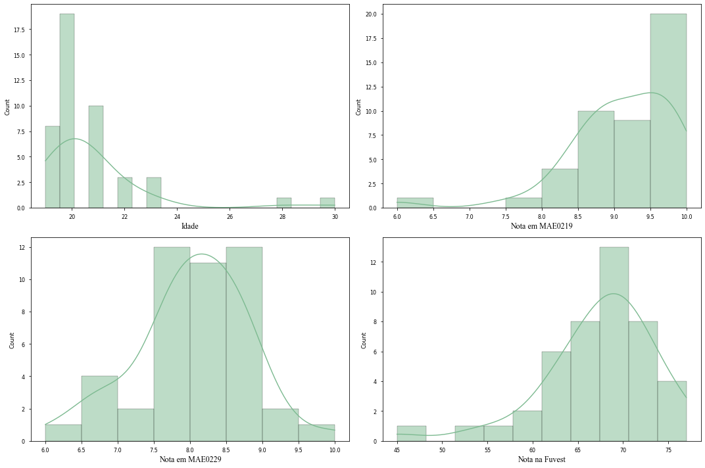

Descrição dos Dados
Os dados para este exercício são uma cross-section de alunos do curso de Economia da Universidade de São Paulo. Na nossa base de dados, nós temos acesso as seguintes variáveis:
# Column Non-Null Count Dtype
--- ------ -------------- -----
0 genero 45 non-null object
1 idade 45 non-null int64
2 nota1 45 non-null float64
3 nota2 45 non-null float64
4 fuvest 44 non-null float64
5 gosta_curso 45 non-null object
6 frequencia 45 non-null object
7 gosta_estudo 45 non-null object
8 ensino_medio 45 non-null object
9 trabalho 45 non-null object
10 nasceu_sp 45 non-null object
11 pretende_estudar 45 non-null object
Como indicado na tabela acima, nós possuímos uma observação faltante na variável que apresenta a nota da Fuvest. Essa ausência será tratada posteriormente no código que gera os modelos de regressão. Adicionalmente, como não iremos usar variáveis categóricas neste primeiro momento, eu optei por manter na base apenas as variáveis relevantes para o exercício.
| genero | idade | nota1 | nota2 | fuvest | gosta_curso | frequencia | |
|---|---|---|---|---|---|---|---|
| 0 | M | 23 | 8.5 | 8.5 | 67.0 | S | S |
| 1 | M | 21 | 10.0 | 10.0 | 71.0 | S | S |
| 2 | F | 21 | 8.6 | 8.3 | 66.0 | S | S |
| 3 | M | 23 | 9.0 | 6.8 | 62.0 | S | S |
| 4 | M | 22 | 9.5 | 8.6 | 68.0 | S | S |
Abaixo, temos uma breve descrição das variáveis contínuas presentes na base. Como é possível ver, a nota em MAE0229 dos alunos é bem distribuída, assemelhando-se a uma normal. Entretanto, a variável de idade possui uma assimetria à direita, algo esperado dado as características dos indivíduos da amostra (estudantes universitários). E as notas de MAE0219 e as notas da Fuvest possuem uma assimetria à esquerda.

Modelos de Regressão
Antes de passar para a estimação dos modelos, é necessário retirar o efeito das diferentes escalas de medidas dos dados. Isto é, como as notas das matérias da Universidade de São Paulo são medidas numa escala de 0 a 10 e a prova da Fuvest é medida em uma escala de 0 a 90, precisamos normalizar (trazer para um intervalo entre 0 e 1) os valores dessas variáveis. Terminado o procedimento descrito, a nova base de dados ficará assim:
| genero | idade | nota1 | nota2 | fuvest | gosta_curso | frequencia | |
|---|---|---|---|---|---|---|---|
| 0 | M | 23 | 0.625 | 0.625 | 0.68750 | S | S |
| 1 | M | 21 | 1.000 | 1.000 | 0.81250 | S | S |
| 2 | F | 21 | 0.650 | 0.575 | 0.65625 | S | S |
| 3 | M | 23 | 0.750 | 0.200 | 0.53125 | S | S |
| 4 | M | 22 | 0.875 | 0.650 | 0.71875 | S | S |
Posto isso, podemos estimar o modelo:
Onde
OLS Regression Results
==============================================================================
Dep. Variable: nota2 R-squared: 0.198
Model: OLS Adj. R-squared: 0.179
Method: Least Squares F-statistic: 10.62
Date: Mon, 23 May 2022 Prob (F-statistic): 0.00219
Time: 22:50:40 Log-Likelihood: 15.114
No. Observations: 45 AIC: -26.23
Df Residuals: 43 BIC: -22.61
Df Model: 1
Covariance Type: nonrobust
==============================================================================
coef std err t P>|t| [0.025 0.975]
------------------------------------------------------------------------------
const 0.1507 0.113 1.339 0.188 -0.076 0.378
nota1 0.4599 0.141 3.259 0.002 0.175 0.745
==============================================================================

Os resultados da regressão acima dizem que um ponto a mais na nota de Introdução à Probabilidade e Estatística I (MAE0219), está associado a um aumento de
Entretanto, é necessário notar que o
Para corrigir o erro de omissão de variável do modelo anterior, estimaremos um novo modelo, dado por:
Onde as varáveis anteriores mantém seu significado e
OLS Regression Results
==============================================================================
Dep. Variable: nota2 R-squared: 0.224
Model: OLS Adj. R-squared: 0.186
Method: Least Squares F-statistic: 5.912
Date: Mon, 23 May 2022 Prob (F-statistic): 0.00555
Time: 22:50:40 Log-Likelihood: 15.094
No. Observations: 44 AIC: -24.19
Df Residuals: 41 BIC: -18.83
Df Model: 2
Covariance Type: nonrobust
==============================================================================
coef std err t P>|t| [0.025 0.975]
------------------------------------------------------------------------------
const 0.0846 0.139 0.611 0.545 -0.195 0.364
nota1 0.4714 0.147 3.213 0.003 0.175 0.768
fuvest 0.0879 0.141 0.622 0.538 -0.198 0.373
==============================================================================
Os resultados da regressão acima indicam que, mantendo a nota em MAE0219 constante, um ponto a mais na prova da Fuvest está associado a um aumento de 8,79% na média de MAE0229. Em outras palavras, dados dois estudantes com a mesma nota em MAE0219, a previsão é que o estudante que tiver obtido a maior nota na Fuvest terá uma nota 8,79% maior em MAE0229.
Analogamente, mantendo a nota da Fuvest constante, um aumento na nota de MAE0219 está associado a um aumento de 47% da média de MAE0229.
Entretanto, vale notar que o